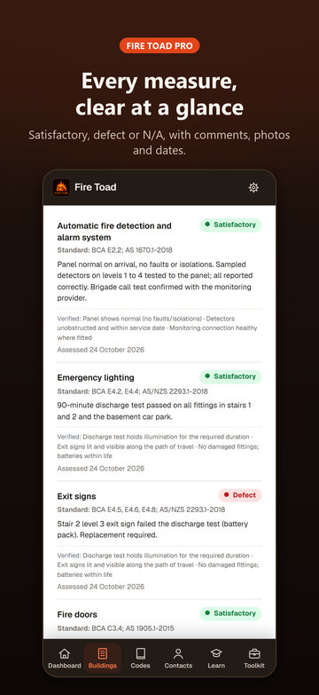
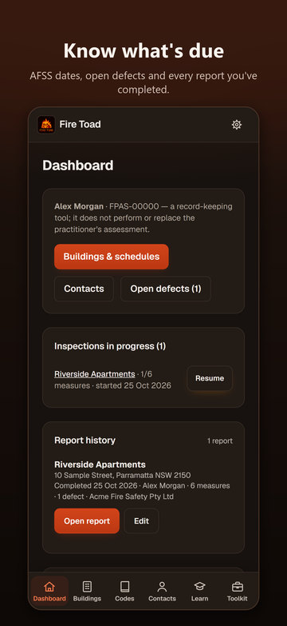

Press kit
About Fire Toad
Fire Toad is an iPhone app for fire safety practitioners and the fire services businesses they work for. It records buildings and their fire safety schedules, walks the practitioner through a site inspection measure by measure, logs defects with photos, and produces a Fire Safety Assessment Report with a reference number and the practitioner's sign-off. For NSW buildings, it checks what stands in the way of an annual or supplementary fire safety statement and fills the official NSW form as a Word document. It works offline, needs no account, and keeps every record on the phone. Fire Toad is free to download, every user's first 3 reports include Fire Toad Pro, and Pro is a monthly or yearly subscription after that.
Fact sheet
| App | Fire Toad |
|---|---|
| Developer | firetoad |
| Based in | Australia |
| Platform | iPhone, on the App Store |
| Current version | 1.3 |
| For | Accredited practitioners (fire safety) and fire services businesses, with the statement workflow built for NSW |
| Price | Free download. Every user's first 3 reports include Pro. Fire Toad Pro: A$19.99 a month or A$149.99 a year (saves 37%), auto-renewing, same features on both plans. Customers who bought before version 1.3 keep Pro. Prices may vary by country. |
| Account and data | No account, no server, no analytics, no advertising. Works offline; records stay on the phone. |
| Language | English |
| App Store | apps.apple.com/app/id6818058403 |
| Website | firetoad72.github.io/firetoad |
| Media contact | firetoad42@gmail.com |
Key features
- Buildings and schedules: tick measures from a list of 30, each with its standard of performance and AS 1851 service frequency filled in, and pick the edition of each standard.
- Guided site inspections: a checklist per measure, Satisfactory, Defect or N/A with nothing pre-selected, notes in the practitioner's own words, photos, and the last inspection's notes to reuse.
- Defects on the spot: marking a measure Defect logs it as Critical or Non-critical, with the note and photos; rectification history stays on the building.
- Fire Safety Assessment Report: a reference number, summary of results, every measure assessed, defects and the practitioner's sign-off, as an A4 PDF to share, email or print.
- Your company's letterhead: name, logo, ABN, licence and contact details, chosen per report.
- NSW AFSS and SFSS: a readiness check that links each gap to its fix, and the official NSW form filled as a Word document, ready to check and sign.
- What's due: AFSS due dates and supplementary statement dates with a countdown, plus report history.
- Practitioner Toolkit: an offline, rules-based standards search with paraphrased requirements and clause numbers (991 clause citations, never the text of the standards), a measures directory, defect classifier, glossary and quiz.
- Private by design: works with no signal, no account, and a backup file the practitioner saves and restores themselves.
The full list is on the features page, and pricing details are on the pricing page.
Icon and video
Screenshots
The 10 App Store screenshots, 1206 × 2622 PNG. Tap one to open the full-size file. They show fictional demo data (Acme Fire Safety, Riverside Apartments, Alex Morgan).
 1. The report under your letterhead
1. The report under your letterhead
2. Every measure's result 3. Buildings and schedules
3. Buildings and schedules 4. Building a schedule
4. Building a schedule 5. A guided site inspection
5. A guided site inspection 6. Logging a defect
6. Logging a defect
7. The Dashboard 8. The NSW AFSS readiness check
8. The NSW AFSS readiness check 9. The Practitioner Toolkit
9. The Practitioner Toolkit 10. Fire Toad Pro
10. Fire Toad Pro


Contact
For interviews or questions, email firetoad42@gmail.com.
iPhone is a trademark of Apple Inc., registered in the U.S. and other countries and regions. App Store is a service mark of Apple Inc. Fire Toad is not affiliated with the NSW Government, Fire and Rescue NSW or Standards Australia.